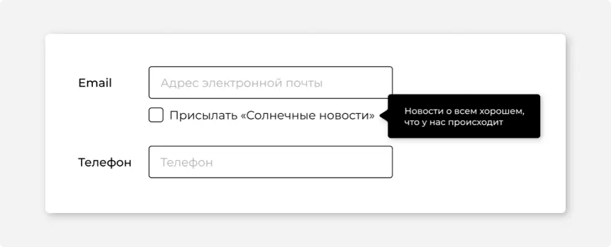
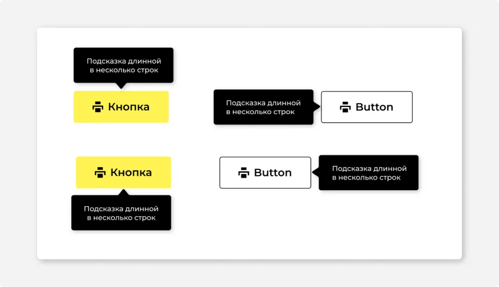

#1
Назначение
Тултип — это подсказка, появляющаяся при наведении на элемент.
Используется на элементах, которые не вмещают полное название или требуют небольшого пояснения. Например: панель действий, иконки без текста, сокращенные слишком длинные названия в таблице.
#2
Описание работы
Хинт появляется при наведении курсора на элемент, с задержкой в 400 миллисекунд. Это нужно чтобы при движении курсора по странице не было моргания хинтов.
Исчезает хинт мгновенно, как только курсор «уйдет» с элемента. Хинт исчезает и в том случае, если после его появления прокрутить страницу.
Текст тултипа — максимально короткий, в идеале не больше 70 символов. Не может содержать инструкцию. Не дублируйте название объекта в тулипе.
#3
Размеры и расположение
Максимальная ширина прямоугольной области 200 px.
Тултип появляется сверху от элемента к которому относится. Если сверху нет места — открывается вниз. Можно указать приоритет — сверху или снизу, и даже слева или справа.
Если тултип находится сверху или снизу от элемента, то текст в нем выравнивается по центру. Если справа или слева — то выравнивание по левому краю.
